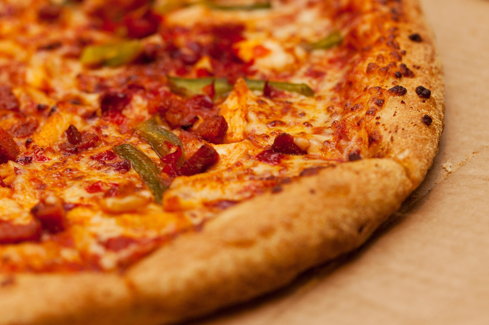
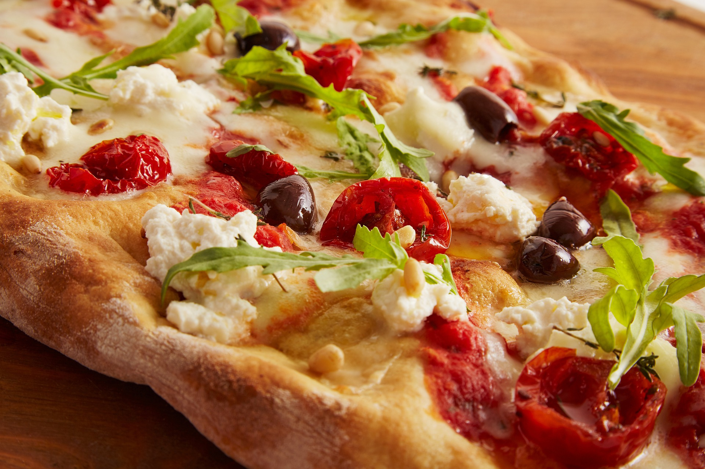
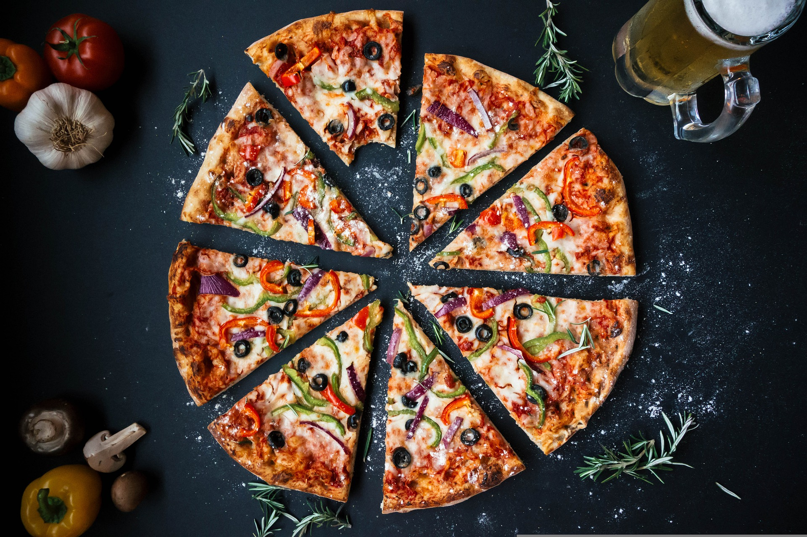

Descubra novos sabores!
Experimente nossos exclusivos
Experimente nossos exclusivos
sabores do chefe.

Dedicação e qualidade
Veja o que faz a nossa
Veja o que faz a nossa
pizzaria ser diferente.

Pizza por amor.
Controle de produtos que